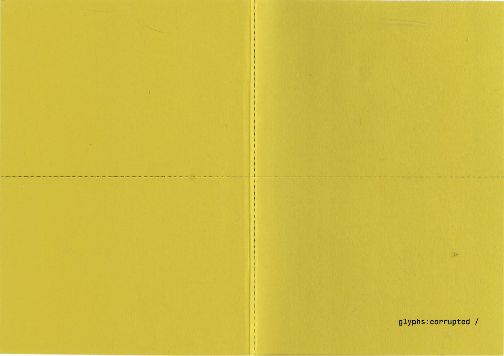
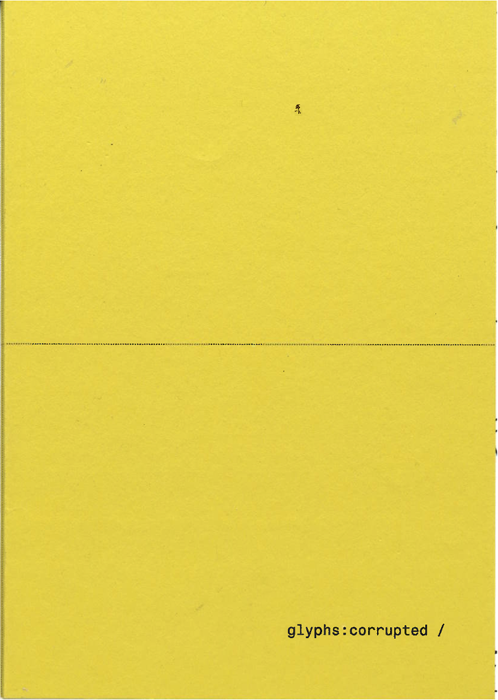
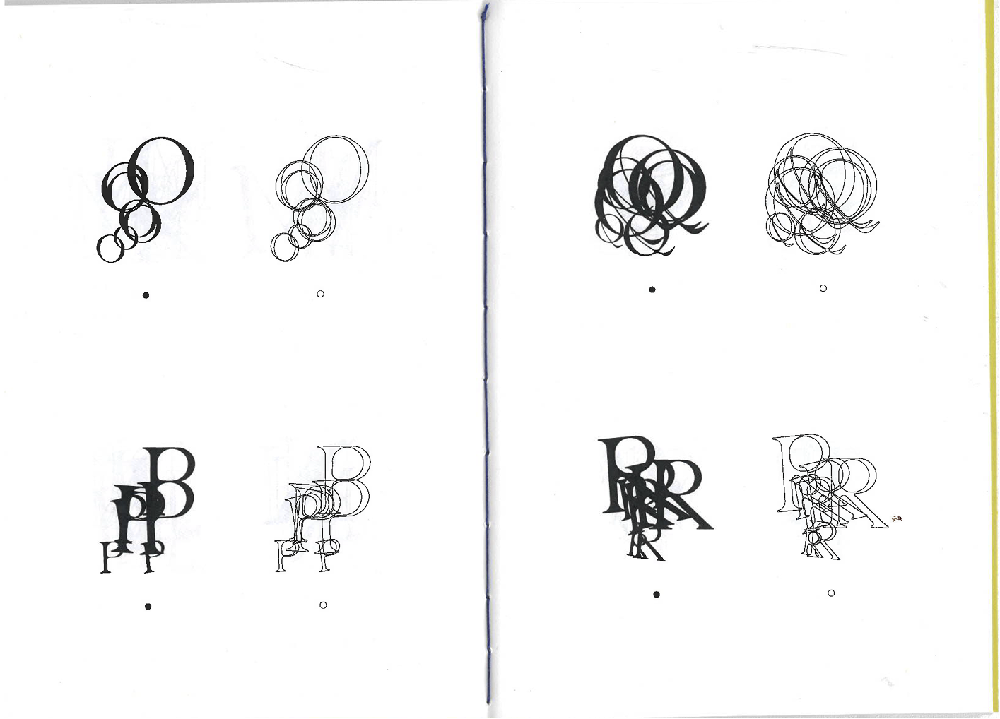

Glyphs: Corrupted
Three experimental typefaces exploring the boundaries of legibility, corrupting letterforms through systematic deformation.
2025 · Designer
CONCEPT
The project uses rule-based corruption applied to letterforms through algorithmic and data-driven processes. Each typeface family takes a different approach to deformation, testing how far a letter can be pushed before it becomes illegible. The question driving the work: at what point does a corrupted glyph stop being readable and start being a mark?
PROCESS
Each of the three typefaces uses a different strategy. One uses data corruption: scraping source text and deliberately introducing errors through character substitution and rearrangement. Another uses geometric distortion, systematically warping letterforms through transformations. The third explores generative asemic writing, pushing past legibility into abstract mark-making. The line between corrupted but legible and fully illegible was tested iteratively throughout the process.
MATERIALS / FORMAT
Fontbook with three typeface specimens, printed and bound as a typographic study, A4 portrait format.
REFLECTION
This project taught me about legibility as a design constraint, something I carry directly into my UX typography work. Understanding exactly where readability breaks down informs typographic decisions at every level, from interface type to brand applications. The systematic approach to breaking rules clarified why those rules exist in the first place.



